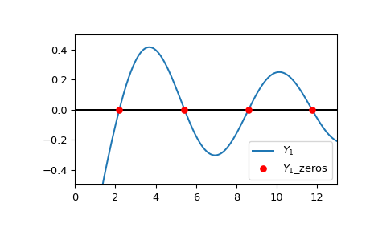

scipy.special.y1_zeros#
- scipy.special.y1_zeros(nt, complex=False)[source]#
Compute nt zeros of Bessel function Y1(z), and derivative at each zero.
The derivatives are given by Y1’(z1) = Y0(z1) at each zero z1.
- Parameters:
- ntint
Number of zeros to return
- complexbool, default False
Set to False to return only the real zeros; set to True to return only the complex zeros with negative real part and positive imaginary part. Note that the complex conjugates of the latter are also zeros of the function, but are not returned by this routine.
- Returns:
- z1nndarray
Location of nth zero of Y1(z)
- y1pz1nndarray
Value of derivative Y1’(z1) for nth zero
References
[1]Zhang, Shanjie and Jin, Jianming. “Computation of Special Functions”, John Wiley and Sons, 1996, chapter 5. https://people.sc.fsu.edu/~jburkardt/f77_src/special_functions/special_functions.html
Examples
Compute the first 4 real roots and the derivatives at the roots of \(Y_1\):
>>> import numpy as np >>> from scipy.special import y1_zeros >>> zeros, grads = y1_zeros(4) >>> with np.printoptions(precision=5): ... print(f"Roots: {zeros}") ... print(f"Gradients: {grads}") Roots: [ 2.19714+0.j 5.42968+0.j 8.59601+0.j 11.74915+0.j] Gradients: [ 0.52079+0.j -0.34032+0.j 0.27146+0.j -0.23246+0.j]
Extract the real parts:
>>> realzeros = zeros.real >>> realzeros array([ 2.19714133, 5.42968104, 8.59600587, 11.74915483])
Plot \(Y_1\) and the first four computed roots.
>>> import matplotlib.pyplot as plt >>> from scipy.special import y1 >>> xmin = 0 >>> xmax = 13 >>> x = np.linspace(xmin, xmax, 500) >>> zeros, grads = y1_zeros(4) >>> fig, ax = plt.subplots() >>> ax.hlines(0, xmin, xmax, color='k') >>> ax.plot(x, y1(x), label=r'$Y_1$') >>> ax.scatter(zeros.real, np.zeros((4, )), s=30, c='r', ... label=r'$Y_1$_zeros', zorder=5) >>> ax.set_ylim(-0.5, 0.5) >>> ax.set_xlim(xmin, xmax) >>> plt.legend() >>> plt.show()
 Compute the first 4 complex roots and the derivatives at the roots of \(Y_1\) by setting
complex=True:>>> y1_zeros(4, True) (array([ -0.50274327+0.78624371j, -3.83353519+0.56235654j, -7.01590368+0.55339305j, -10.17357383+0.55127339j]), array([-0.45952768+1.31710194j, 0.04830191-0.69251288j, -0.02012695+0.51864253j, 0.011614 -0.43203296j]))